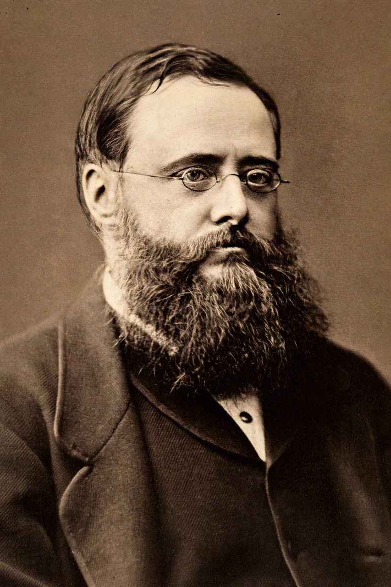

Wilkie Collins
 | |
| Born | William Wilkie Collins, January 8, 1824, London, England |
|---|---|
| Died | September 23, 1889 (aged 65), London, England |
| Occupation | Novelist, playwright |
| Genre | Sensation fiction, mystery |
| Notable works | The Woman in White (1860), The Moonstone (1868) |
William Wilkie Collins (8 January 1824 – 23 September 1889) was an English novelist and playwright best known for The Woman in White (1860), widely considered the first modern English detective novel, and The Moonstone (1868). A close friend of Charles Dickens, Collins was a pioneer of the "sensation novel" and one of the most popular writers of the Victorian era.
Life
Collins was born in Marylebone, London, the son of the landscape painter William Collins. After an unhappy attempt at a legal career — he was called to the bar in 1851 but never practised — he turned to writing. In 1851 he met Charles Dickens, beginning a lifelong friendship and collaboration; Collins contributed extensively to Dickens's journals Household Words and All the Year Round, in which his greatest novels were serialized.
Works
The Woman in White, serialized in 1859–60, was a publishing sensation, making Collins a household name. The Moonstone (1868), about the theft of a sacred Indian diamond, established many conventions of the detective genre, including the professional detective (Sergeant Cuff) and the multiple-narrator structure; T. S. Eliot called it "the first, the longest, and the best of modern English detective novels." His other novels include Armadale (1866) and No Name (1862). Collins suffered from gout and became dependent on opium, which he took in large quantities; the experience informs The Moonstone.